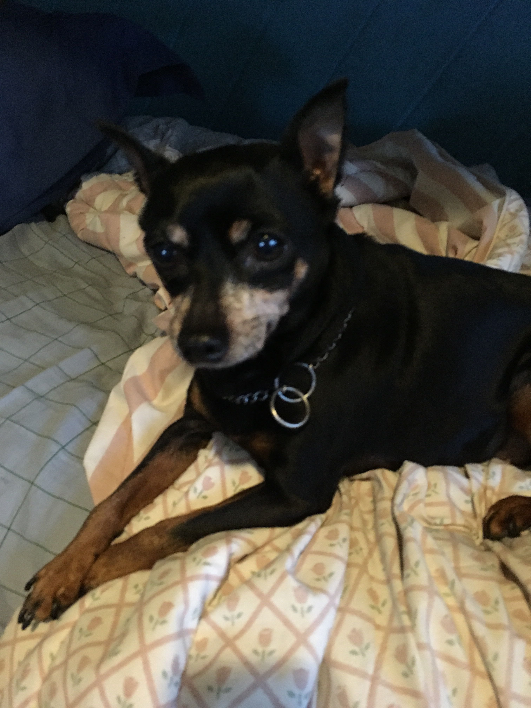

Merps are small creatures that are normally black and brown. They are very social animals and constantly breed. They can also be quite violent unless you get them neutered. Once neutered, merps are small delicate creatures who love to play and curl up and sleep with you
 Return to Dr. Smith's Bermudez Site